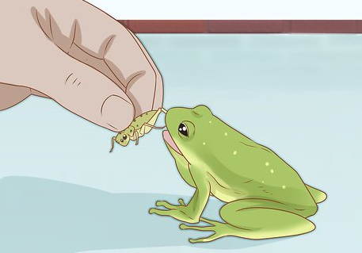

Jesteśmy pasjonatami małych słodkich żółwi i chcemy dzielić się wiedzą na ich temat z innymi entuzjastami. Tutaj znajdziesz informacje o różnych gatunkach, jak również wskazówki dotyczące opieki nad nimi.
Małe słodkie żółwie występują w różnych gatunkach, takich jak:
Opieka nad małymi słodkimi żółwiami wymaga odpowiednich warunków środowiskowych i dietetycznych. Pamiętaj o zapewnieniu im ciepła, odpowiedniej ilości światła i właściwego pożywienia. Tutaj znajdziesz również informacje o tym, jak utrzymać ich terrarium w odpowiednich warunkach.
Jeśli masz pytania lub chcesz podzielić się swoimi doświadczeniami dotyczącymi małych słodkich żółwi, skontaktuj się z nami pod adresem email: kontakt@zolwie.com